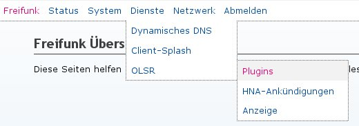
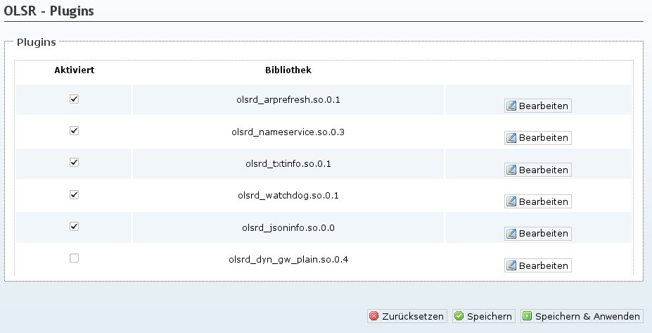
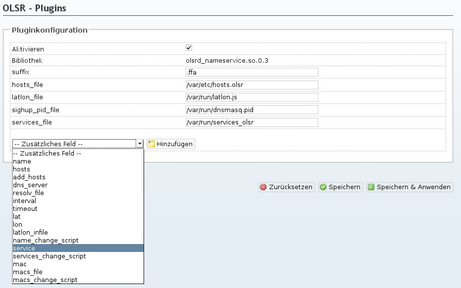
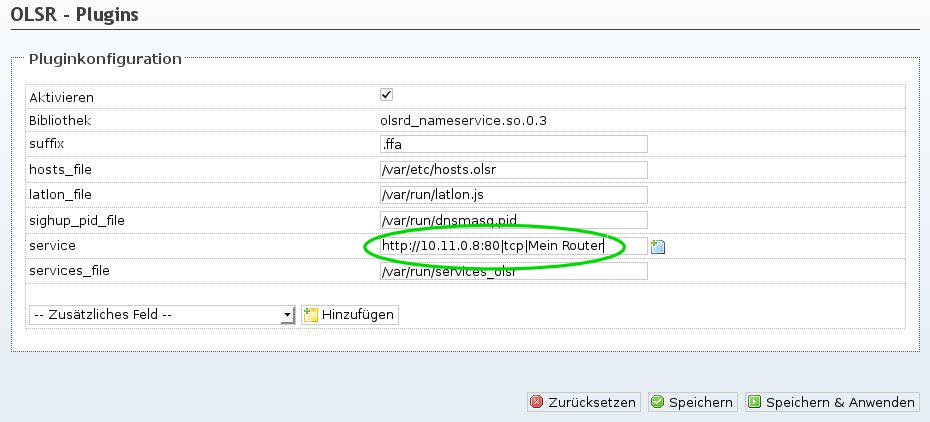
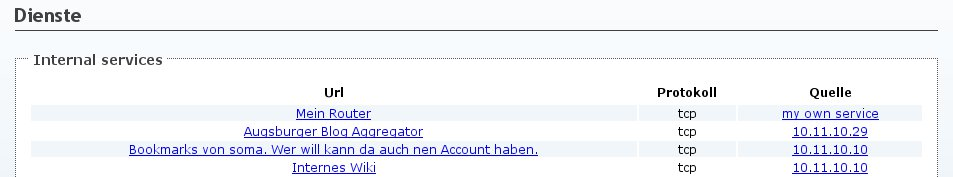

Um eigene Dienste im gesamten Mesh bekannt zu machen kann das OLSR-Nameservice Plugin verwendet werden. Dieses sendet in regelmässigen Abständen Informationen über die lokalen Dienste an alle anderen Nodes im Mesh.
Es können nur Service-Ankündigungen für IPs/Adressen verschickt werden, die entweder local verwendet oder als HNA angekündigt werden.
Ist der Service unter einer DNS-Adresse bekannt, dann kann statt einer IP auch diese Adresse in der URL des Dienstes verwendet werden.
Ziel: Es soll ein Webserver auf dem lokalen Knoten mit der IP 10.11.12.13 angekündigt werden. Der Webserver läuft auf Port 80.
1. Um zu den Einstellungen für das Nameservice Plugin zu kommen: Gehe zu Dienste -> OLSR -> Plugins

2. Klicke in der Zeile wo olsrd_nameservice.so.0.3 steht auf “Bearbeiten”

3. Füge unten aus der Auswahlbox eine Option für “Service” hinzu

4. Plugin konfigurieren

uci add_list olsrd.olsrd_nameservice.service="http://10.11.0.8:80|tcp|Mein Router"
uci commit olsrd
/etc/init.d/olsrd restart
Es können auch mehrere Dienste angekündigt werden:
uci add_list olsrd.olsrd_nameservice.service="http://10.11.0.8:80|tcp|Mein Router"
uci add_list olsrd.olsrd_nameservice.service="ftp://10.11.0.8:21|tcp|Mein FTP Server"
uci commit olsrd
/etc/init.d/olsrd restart
Erklärung des Service Strings
Der Aufbau des erwarteten Strings als Option für Service ist recht einfach:
<url>:<port>|<Protokoll (tcp oder udp)>|<Beschreibung des Dienstes>
Port darf nicht weggeleassen werden!
Ist alles korrekt eingerichtet dann erscheint im öffentlichen Teil des Webinterfaces auf allen Routern im Mesh unter “Dienste” nach kurzer Zeit die eben eingerichtete Ankündigung für “Mein Router”.
